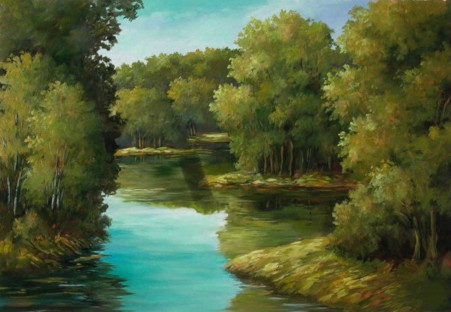

|
 |
An Treas Cuid“Anois” arsa ise “nuair a thiocfas m'athair chugat tráthnóna taitneoidh an uile rud leis i gceart agus bhéarfaidh sé buíochas mór duit ach ná tabhair aird air, tá dúil aige do chur chun báis go fóill agus bí ar d'fhaichill. |
Cuid 3
“Déarfaidh sé leat go bhfuil triúr iníonacha aige agus go dtabharfaidh sé bean acu duit le pósadh agus amárach bhéarfaidh sé síos chun na habhanna thú agus dhéanfaidh sé trí breic-gheala dhínn agus iarrfaidh sé ort do rogha a thoghadh.Fanóidh mise thíos ar thóin an phoill agus más áil leat mé féadann tú breith orm.”
“Ina dhiaidh sin, dhéanfaidh sé trí mhadaí uisce agus trí ghéacha dhínn agus fanóidh mise níos faide ar shiúl uait ná mo chuid deirfiúracha agus féadann tú breith orm más é do thoil é.”
Tháinig an máistir anuas fá thitim na hoíche, mar ba ghnách leis agus nuair a chonaic sé nach raibh locht le fáil aige ar aon ní thug sé buíochas mór do Dhomhnall.
“Ní i do shearbhóntach is cóir duite a bheith” arsa é “agus mar sin de bhéarfaidh mise duine de mo thriúr iníonacha duit le pósadh agus ar maidin amárach caithfidh tú féacháil cé acu a bheas agat.”
I ndiaidh an bhris-throscaidh lá arna mhárach thug an máistir a thriúr iníonacha síos go dtí an abhainn agus rinne ina mbreic-gheala iad agus d'iarr ar Dhomhnall a rogha a ghlacadh. Mar thug an bhean b'óige comhartha dhó roimhe sin bhí a fhios aige go maith cé acu ba chóir a thógáil.
Mar a gcéanna leis na géacha agus na madaí uisce d'éirigh leis an bhean a b'óige a bheith leis i gcónaí, agus dúirt an t-athair go gcaithfí a bpósadh an oíche sin.
Rinneadh bainfheis agus cuireadh fá choinne sagairt meisi agus cléireach uisce agus pósadh an lánúin. Lig an bhean uirthi nach raibh mórán spéise aici insan chéile a thoghadh a hathair dí mar bhí a fhios aici go ndéanfadh sé feall ar Dhomhnall sula mbeadh i bhfad ann, agus nuair a fuair sí faill air d'iarr sí air a bheith ar a choimheád nuair a chuirfí suas a luí é agus gan a dhul thar leic an dorais nó gur urlár bréagach a bhí insan tseomra agus go rachadh sé síos leis chomh luath agus a chuirfeadh sé cos air.
Ba ghoirid ina dhiaidh sin an mheán oíche a bhí sé nuair a hiarradh ar Dhomhnall a dhul a luí agus thaispeáin an fear uasal é féin an seomra dhó. Ghlac sé comhairle a mhná agus ní dheachaigh sé isteach thar leic an dorais. Níorbh fhada a bhí sé ansin agus greim aige ar an ursa gur thit an tóin as an leaba a bhí gléasta dhó.
Nuair a bhí iomlán an teaghlach faoi shuaimhneas, tháinig a bhean chuige agus d'iarr air a leanúint chomh luath gasta agus a thiocfadh leis. Chuaigh an bhean óg amach agus ghléas sí bromaistín maol a bhí insan stábla, le diallait, pillín agus srian agus chuaigh siad araon a mharcaíocht air.
Chomh luath agus a mhothaigh na gearráin eile an bromaistín ar siúl thosaigh siad ag seitreach nó gur mhúscail siad an uile dhuine fán chaisleán, agus an uair a cuireadh cuartú fuarthas amach go raibh Domhnall agus a bhean imithe leis an bhromaistín agus níorbh fhada go deachaigh tóir ina ndiaidh agus an duine uasal agus a bhean agna gceann.
| Baile |